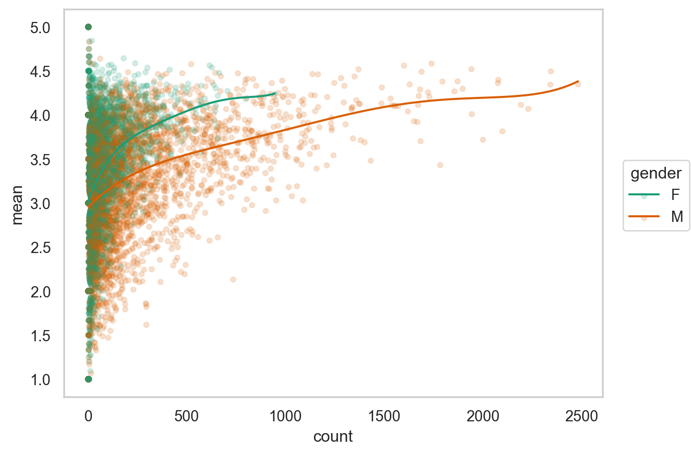
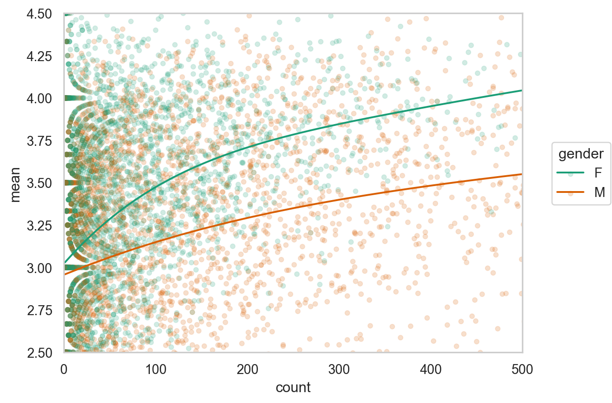
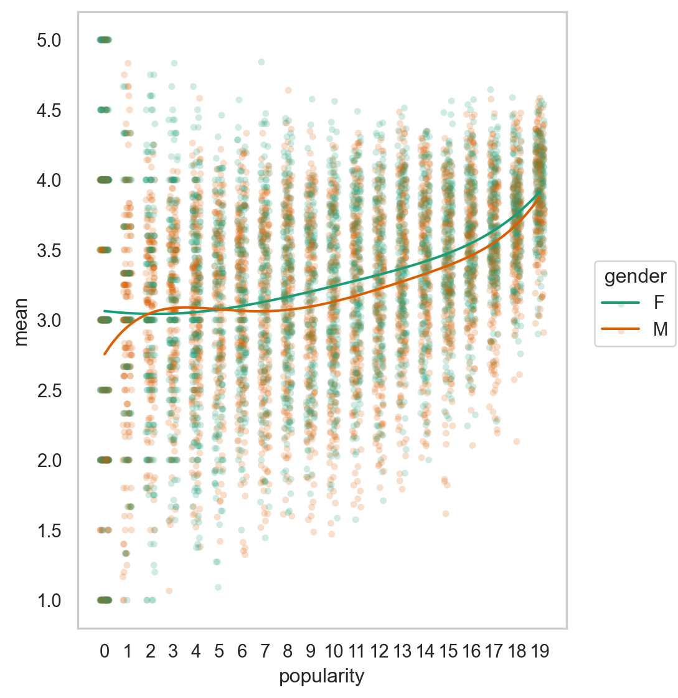
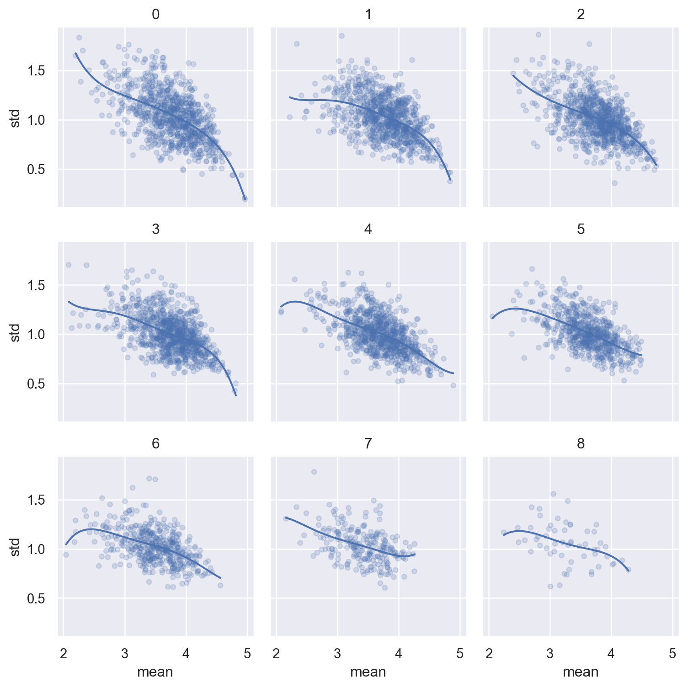
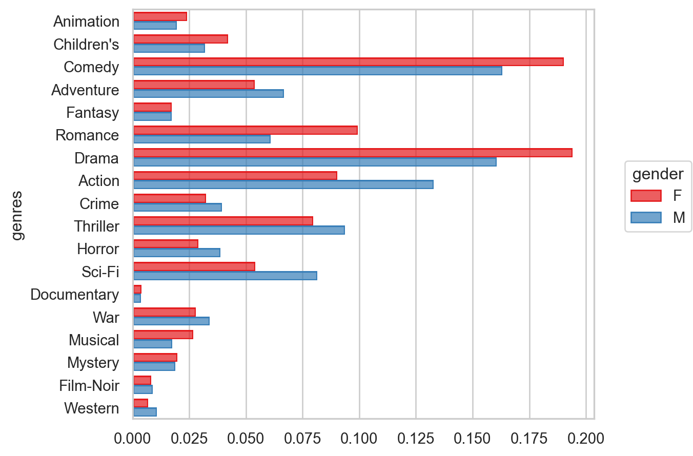
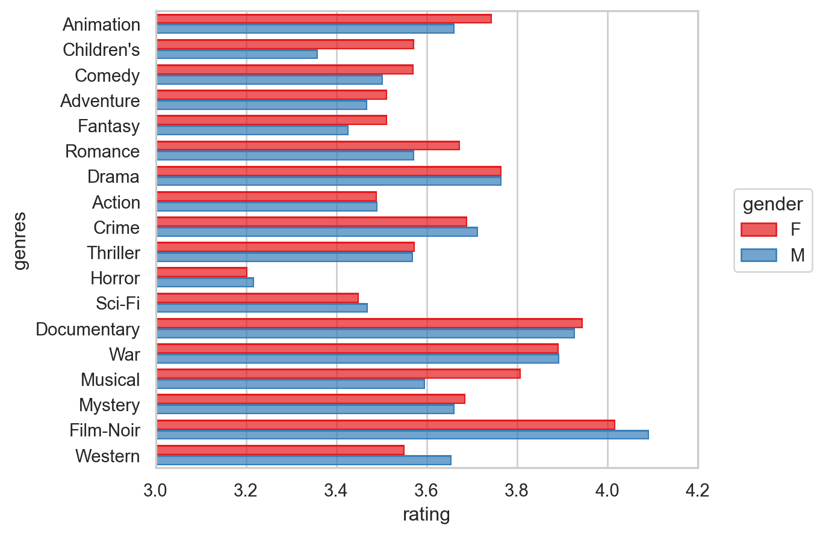
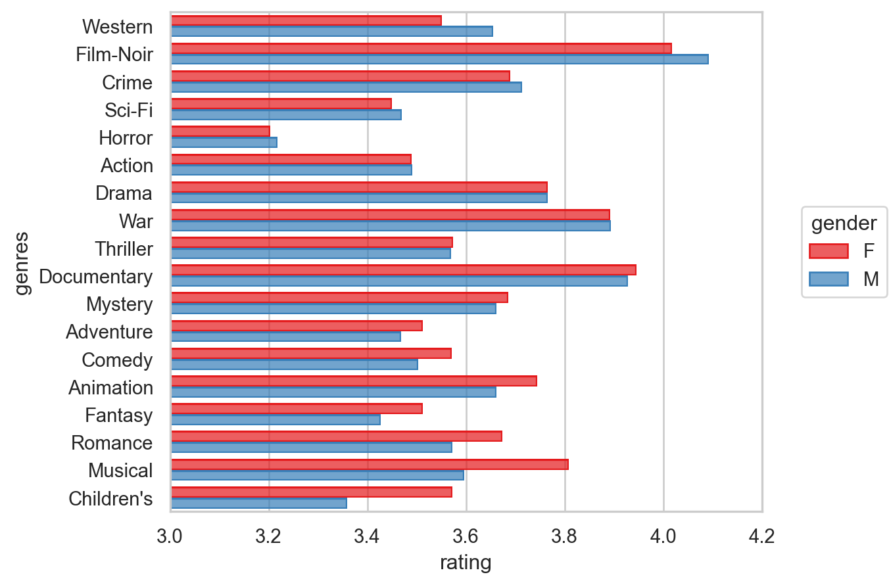

# numerical calculation & data framesimport numpy as npimport pandas as pd# visualizationimport matplotlib.pyplot as pltimport seaborn as snsimport seaborn.objects as so# statisticsimport statsmodels.api as sm# pandas optionspd.set_option('mode.copy_on_write', True) # pandas 2.0pd.options.display.float_format ='{:.2f}'.format# pd.reset_option('display.float_format')pd.options.display.max_rows =7# max number of rows to display# NumPy optionsnp.set_printoptions(precision =2, suppress=True) # suppress scientific notation# For high resolution displayimport matplotlib_inlinematplotlib_inline.backend_inline.set_matplotlib_formats("retina")
movie_id title genres
0 1 Toy Story (1995) Animation|Children's|Comedy
1 2 Jumanji (1995) Adventure|Children's|Fantasy
2 3 Grumpier Old Men (1995) Comedy|Romance
3 4 Waiting to Exhale (1995) Comedy|Drama
4 5 Father of the Bride Part II (1995) Comedy
5 6 Heat (1995) Action|Crime|Thriller
ratings과 users 데이터를 merge한 후 다음과 같은 user_rating 데이터셋을 만드세요.
# user_id gender age occupation zip movie_id rating timestamp# 0 1 F 1 10 48067 1193 5 978300760# 1 1 F 1 10 48067 661 3 978302109# 2 1 F 1 10 48067 914 3 978301968# ... ... ... ... ... ... ... ... ...# 1000206 6040 M 25 6 11106 562 5 956704746# 1000207 6040 M 25 6 11106 1096 4 956715648# 1000208 6040 M 25 6 11106 1097 4 956715569
다음과 같이 영화(movie_id)별로 남녀(gender)에 따른 rating의 평균과 그 개수(count)을 구해보세요.
# movie_id gender mean count# 0 1 F 4.19 591# 1 1 M 4.13 1486# 2 2 F 3.28 176# 3 2 M 3.18 525# 4 3 F 3.07 136# 5 3 M 2.99 342...
다음과 같은 플랏을 그려보고 평가의 수가 적을수록 그 편차가 커지는 현상을 확인해보세요.
혹시, 평가의 수가 많은 영화일수록 평가가 높아지는 현상에 대해 설명할 수 있을까요?
또한, 남녀의 평가에 차이가 벌어지는 현상을 설명할 수 있을까요?

3번에서 플랏에 .limit(x=(0, 500), y=(2.5, 4.5))을 추가하여 평가 개수(count)가 0에서 500사이이고, 평균 rating이 2.5에서 4.5 사이인 것으로 확대해서 보고, 평가 개수가 몇 개 정도부터 남녀의 평가의 차이가 대략 일정하게 되는지 살펴보세요.

영화별로 남녀의 평가가 크게 갈리는 영화들을 찾기 위해
5.1 2번에서 구한 데이터에서 남녀 모두 rating이 300개 이상 있는 영화로만 간추려보세요.
5.2 이 데이터를 popular_movies라고 명명하고,
이 데이터를 gender에 관해 wide format으로 변환한 후; pivot()을 이용
여자의 평균 rating에서 남자의 평균 rating을 뺀 그 차이를 데이터에 추가한 후; assign()을 이용
그 차이로 sort한 후,
5.3 여자의 선호가 더 높은 영화 5편과 남자의 선호가 더 높은 영화 5편 (선호 차이의 크기 순서로)을 구해보세요.
이를 위해서 movies 테이블 안의 영화제목(title)을 merge()를 이용해 추가하세요.
3번 플랏에서 유추되듯이 평가의 개수가 영화의 완성도 혹은 인기도를 파악할 수 있는 대략적인 지표가 될 수 있습니다. 즉, 평가수가 많을 수록 평점도 높습니다. 따라서 평가 개수를 바탕으로 인기도(popularity)를 수치화 하려고 합니다.
우선, 3번 플랏에서 평가수가 같다면 여성이 더 높은 평점을 주는 것으로 보이는데, 이 현상을 다음과 같이 자세히 들여다 봅니다.
다음과 같은 count를 20개의 구간으로 discretize해주는 함수를 성별로 grouping된 user_rating 데이터에 apply() 하세요.
def popular(g): g["popularity"] = pd.qcut(g["count"], q=20, labels=False)return g
이 함수의 의미를 파악하고, 20단계 (0, 1, 2, …, 19)의 popularity가 성별을 고려하여 각 영화에 부여되었음을 이해합니다. (각각은 평가 개수 5%에 해당)
이제, 다음과 같이 popularity에 따라 평점이 높아지는 현상을 성별을 고려한 후 본 결과를 아래와 같이 플랏을 통해 확인해봅니다.
남성 유저와 여성 유저의 비율에 큰 차이 (4331:1709)가 있는 것을 고려했을 때, 어떻게 이 현상을 설명할 수 있을까요?

남녀별로 평점의 편차가 큰, 즉 의견이 분분한 영화들을 구해봅니다.
5번에서 구한 popular_movies에 한해 남녀 각각에 대해 영화별로 평점의 편차를 표준편차로 구해보고,
5번을 못 구한 경우, 다음 파일을 다운로드 받아 popular_movies로 사용합니다.
남녀별로 편차 상위 2개만 표시합니다. (동등한 순위 모두 포함)
다음 method를 이용하는 함수를 정의하고 apply()로 적용해 봅니다.
df.nlargest(n, "variable name", keep="all")
영화제목을 movies 데이터와 merge하여 표시합니다.
이제 초점을 유저들에게 돌려, 유저들의 특성을 고려해봅니다. 일반적으로 같은 소스(사람)에서 온 데이터는 비슷한 성향을 띄는데 이를 depenency의 문제라고 합니다. 한 가족 구성원으로부터 왔다든가, 같은 학교의 학생들과 같이 구체적으로 명시하기 어렵지만 데이터 상에서 비슷한 군집을 이룹니다. 이 데이터의 경우 동일한 유저들의 특성이 존재할 수 있는데, 예를 들어 후한 점수를 준다든가, 같은 유저라도 어떤 장르의 영화는 매우 낮은 평점을 준다든가 하는 현상이 있을 수 있는데 이를 알아봅니다.
8.1 우선 개인별(성별로 나눠)로 몇 개정도나 평점을 주었는지 분포를 살펴봅니다.
8.2 개인별로 평점의 평균(mean)과 표준편차(std), 개수(count)를 구합니다; 성별 차는 없는 것으로 간주함
8.3 이 세 변수의 관계를 보기 위해, 평점 개수(count)를 10개의 구간으로 pd.cut을 이용해 discretize해서 살펴봅니다.
8.1에서 분포를 살펴보았으면, 개수를 먼저 log 스케일로 변환해서 구간으로 쪼개는 것이 유리함을 알 것입니다. (np.log 이용)
즉, 대다수는 2백개 이하의 평점을 남긴 반면, 소수의 유저들 중에는 수천개의 평점을 남긴 사람도 있습니다.
10개 구간으로 discretized된 (log) count를 .facet을 이용해 아래와 같이 유저들 각자의 평점 평균과 표준편차의 관계를 살펴봅니다; (아래 플랏은 데이터를 적절히 필터링 한 결과입니다.)
평점을 얼마나 많이 남겼는지와 관계없이 비슷한 현상이 나타나는데 이 현상을 설명할 수 있을까요?
평균적으로 낮은 평점을 준 소위 짠 유저들이 더 비판적이고 고민끝에 평점을 준 것이라고 추측할 수 있을까요?

장르별로 남녀의 선호 차이를 두 관점 1) 평점의 개수/비율, 2) 평점의 평균의 관점에서 따로 살펴봅니다.
movies 데이터에서 장르(genres)는 여러 장르에 포함되는 것을 | 기호로 나누어 표기되어 있고, 분석을 위해서 다음 코드를 이용해 long format으로 각 장르가 열에 한번씩만 나오도록 다음과 같이 바꾸세요.
movies_long = movies.copy()movies_long["genres"] = movies_long["genres"].str.split("|")movies_long = movies_long.explode("genres")movies_long.head(8)# movie_id title genres# 0 1 Toy Story (1995) Animation# 0 1 Toy Story (1995) Children's# 0 1 Toy Story (1995) Comedy# 1 2 Jumanji (1995) Adventure# 1 2 Jumanji (1995) Children's# 1 2 Jumanji (1995) Fantasy# 2 3 Grumpier Old Men (1995) Comedy# 2 3 Grumpier Old Men (1995) Romance
이 movie_long과 1번에서 만든 user_rating을 merge한 후 다음 문제를 이어가세요.
9.1 장르별로 평점의 개수를 간단히 플랏으로 살펴보는데 남녀 별로 따로 비율이 나오도록 해보세요.
so.Hist("proportion", common_norm=False)이 필요할 수 있음

9.2 이번에는 장르별로 평점의 평균를 남녀별로 간단히 플랏으로 확인해보세요.
so.Agg()를 활용하고,
.limit(x=(3, 4.2))를 써서 확대해서 살펴보세요.

9.3 위의 플랏에서 살펴본 평균 평점의 값을 직접 구해봅니다. 장르별, 남녀로 그룹핑을 하여 평균 평점을 다음과 같이 나오도록 구해보세요.
unstack()을 활용해 보세요.
# gender genre F M# 0 Action ... ...# 1 Adventure ... ...# .. ... ... ...# 16 War ... ...# 17 Western ... ...
9.4 영화별 남녀의 평균 평점의 차이(Female - Male) 순으로 정렬된 플랏을 대략적으로 다음과 같이 그려봅니다.
Customizing할 때, .limit(x=(3, 4.2))과 .scale(y=so.Nominal(order=[]))이 필요할 수 있습니다.

9.5 평점의 장르별 분포를 boxplot으로 볼 수도 있지만, 대신 seaborn.object의 Range()를 써서 평균과 표준편차를 다음과 같이 그려보세요.
movie_id title genres year
0 1 Toy Story (1995) Animation|Children's|Comedy 1995
1 2 Jumanji (1995) Adventure|Children's|Fantasy 1995
2 3 Grumpier Old Men (1995) Comedy|Romance 1995
... ... ... ... ...
3880 3950 Tigerland (2000) Drama 2000
3881 3951 Two Family House (2000) Drama 2000
3882 3952 Contender, The (2000) Drama|Thriller 2000
[3883 rows x 4 columns]